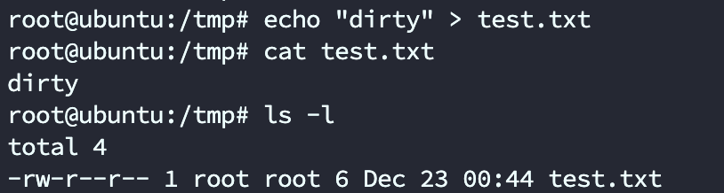
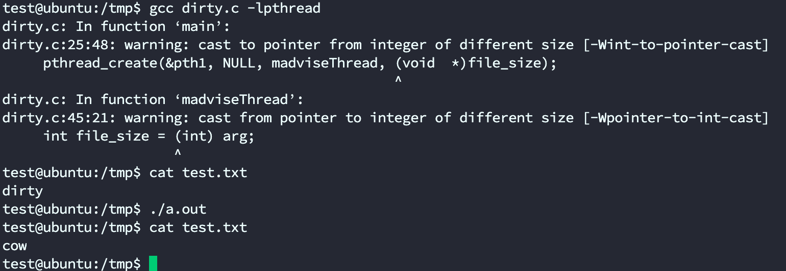
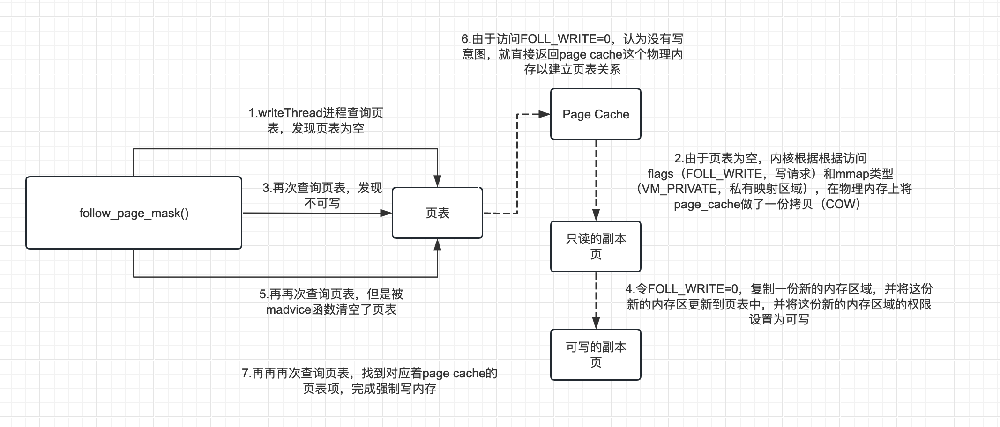

Dirty COW（脏牛）漏洞是一种影响Linux操作系统的本地特权升级漏洞，其全称为"Copy-On-Write"（写时复制）漏洞。这个漏洞在2016年被公开，并且影响了大量的Linux内核版本。
Dirty COW漏洞的根本原因是Linux在竞态条件下的复制时写入（Copy-On-Write）机制的实现存在缺陷。Copy-On-Write是一种内存管理技术，它允许多个进程共享同一个物理内存页面的副本，直到其中一个进程尝试修改该页面时，系统才会复制出一个新的页面供修改进程使用。
竞态条件（Race Condition）是多个并发操作或线程访问共享资源时可能出现的一种问题。竞态条件发生在多个操作之间存在依赖关系，并且操作的执行顺序会影响最终的结果。
听起来似乎比较复杂，我们可以简单一点
假设有一个变量a
1 | a="dirty" |
同时还有另一个变量b
1 | b=a |
尽管这是两个变量，但它们都指向同一个内存对象，因为不需要为相同的值占用两倍的内存量。但如果修改了b变量，操作系统就会为这个变量分配单独的内存。
1 | b+="cow" |
修改时，内核执行了一下操作：
-
为新修改的变量分配内存
-
读取正在复制的对象的原始内容
-
对它执行任何必要的更改，即附加“cow”
-
将修改后的内容写入新分配的内存空间
在步骤 2 和 4 之间存在竞态条件，会使内存映射器将修改后的内容写入原始内存空间，而不是新分配的空间。这样，我们最终会修改 a这个 原始对象而不是 b，即使我们只有 a的只读权限，仍然可以通过竞态条件绕过。
接下来我们可以通过一个小实验来理解这个过程
开始实验
本实验的目标是使用 Dirty Cow 漏洞修改只读文件。
首先通过root创建一个其他人都只能读的只读文件test.txt

接着通过gcc编译一下代码
1 |
|
可以发现文件内容被我们给修改了

分析代码
首先简单看一下主函数代码，在这之前，我们得先了解linux中的Page Cache
Page Cache
在Linux中，Page Cache（页缓存）是一种用于加速文件系统性能的内核机制。Page Cache是一种缓存，它将磁盘上的文件数据以页的形式缓存在内存中，以便快速响应对文件的读取和写入操作。
当进程通过系统调用读取文件时，Linux内核会尝试从Page Cache中查找相应的数据。如果数据已经缓存在Page Cache中，内核可以直接将数据返回给进程，避免了从磁盘读取的开销，从而提高读取性能。
同样地，当进程进行写入操作时，内核会将数据写入Page Cache，并将数据标记为已修改（dirty）。然后，内核会根据一定的策略将这些修改的数据异步地刷新回磁盘，以确保数据持久化。这种延迟写入的方式可以提高写入性能，减少频繁的磁盘IO操作。
mmap
其中，mmap()是一个系统调用函数，用于在进程的虚拟地址空间中创建一个新的内存映射区域。它可以将文件或其他资源映射到进程的内存中，也可以用于创建匿名的、仅在内存中存在的映射区域。
1 | #include <sys/mman.h> |
mmap()函数接受六个参数：
-
addr：映射区域的首选地址。通常传入NULL，让操作系统自动选择一个合适的地址。 -
length：映射区域的长度（以字节为单位）。 -
prot：内存保护标志，指定映射区域的访问权限。常见的选项有：PROT_READ：可读。PROT_WRITE：可写。PROT_EXEC：可执行。 -
flags：映射选项标志，用于控制映射区域的行为。常见的选项有：MAP_SHARED：与其他进程共享映射的文件或资源。MAP_PRIVATE：创建私有的映射区域，对其所做的修改不会影响原始文件或资源。MAP_ANONYMOUS：创建匿名的映射区域，不与文件关联，仅在内存中存在。
-
fd：要映射的文件描述符，如果创建匿名映射，则为-1。 -
offset：映射的文件中的偏移量，通常为0。
mmap创建的内存映射就是将磁盘文件的内容放到了Page Cache里。
主函数
这段代码一共创建了三个线程，主线程、writeThread 和 madviseThread，主线程创建了私有的映射区域并将我们的文件映射到内存，找到我们要替换的内容的位置，然后创建两个线程来产生竞态条件
1 | int main(int argc, char *argv[]) |
madviseThread
然后是madviseThread，在这之前先了解一下madvise函数
madvise()是一个系统调用函数，用于向操作系统提供有关内存映射区域使用方式的提示信息。它的原型如下：
1 |
|
madvise()函数接受三个参数：
addr：指向欲操作的内存区域的起始地址。length：欲操作的内存区域的长度（以字节为单位）。advice：对内存区域使用方式的提示信息，使用MADV_*常量之一。
madvise()函数的常用选项（advice参数）如下：
-
MADV_NORMAL：默认选项，没有特殊提示。 -
MADV_RANDOM：内存区域将以随机访问方式使用。 -
MADV_SEQUENTIAL：内存区域将以顺序访问方式使用。 -
MADV_WILLNEED：预先告知操作系统，内存区域将很快被使用，建议提前加载至内存。 -
MADV_DONTNEED：告知操作系统，内存区域的内容不再需要，可以被丢弃或回收。 -
MADV_REMOVE：从内存中删除映射区域，但保留文件内容。 -
MADV_DONTFORK：禁止映射区域被子进程继承。
madviseThread函数：
1 | void *madviseThread(void *arg) |
madviseThread要干的事非常简单，就是不断丢弃映射内容的副本页，这将导致指向副本页的页表项被清除
writeThread
再来看看writeThread
1 | void *writeThread(void *arg) |
writeThread函数将指定的内容（“cow”）通过/proc/self/mem写入内存，诶？这里似乎出现了一个问题，我们之前通过mmap返回的内存映射不是只读的吗？那这里对该位置尝试写入能写成功吗？而且就算写成功，写的也是内存映射中的内容，和原来的本地磁盘上的内容有什么联系？不急，我们接着往下看
缺页中断
这里先讲讲linux的缺页中断
Linux的缺页中断处理方式大致可以分为以下几个步骤：
- 中断处理程序（Interrupt Handler）：当发生缺页中断时，CPU会暂停当前进程的执行，并转交控制权给内核的中断处理程序。这个中断处理程序负责保存当前进程的上下文，并进行后续的缺页中断处理。
- 查询页表：中断处理程序首先会查询当前进程的页表，以确定引发缺页中断的虚拟地址所对应的页表项。如果页表项不存在或标记为无效，说明该页面尚未映射到物理内存，需要进行页面调入。
- 页面调入：当发现虚拟页面尚未映射到物理内存时，内核会触发页面调入操作。它会选择一个物理页面（可能需要从磁盘读取）来存储该虚拟页面的数据，并进行必要的页面映射更新。
- 更新页表：页面调入后，内核会更新当前进程的页表，将虚拟地址与物理地址进行映射。这样，进程可以继续访问该页面，而不会再触发缺页中断。
- 恢复进程执行：完成页面调入和页表更新后，内核会恢复中断处理程序保存的当前进程上下文，并将控制权返回给进程。进程可以继续执行之前被中断的指令，访问所需的页面。
了解完之后我们开始分析整个过程（初略的讲一下，具体的代码逻辑可以看blingblingxuanxuan的文章）
第一次缺页中断
首先在主函数调用完mmap之后将文件内容以只读的形式映射到了内存中，然而相应的页表还未来得及建立
writeThread进程通过虚拟地址尝试访问这个页，但页表为空，触发缺页中断，不同的情况有不同的处理方式，而这里发生缺页以后，内核根据根据访问flags（FOLL_WRITE，写请求）和mmap类型（VM_PRIVATE，私有映射区域），在物理内存上将page_cache做了一份拷贝（COW），也就是创建一个新的物理页（称为副本页），然后将原始页的内容拷贝到新的物理页中，并使用副本页建立页表，映射给进程使用（联系到之前的例子，对b进行修改，内核拷贝了一份新的地址给b）。同时标记页表为只读RO和脏页dirty
第二次缺页中断
解决完问题，writeThread继续尝试写操作，当查找页表时，发现所请求的页表项被标记为只读（read-only），但是进程试图对该页进行写操作，Linux 的处理方式是将写意图（write intent）去掉，即FOLL_WRITE=0，同时会复制一份新的内存区域，并将这份新的内存区更新到页表中，并将这份新的内存区域的权限设置为可写，内核重新执行引发页面错误的那条指令。
正常情况下，程序拿到新的页表项找到物理内存就可以开始做写操作了，这个写操作是在新的内存页中操作的，和原来的内存页中无关（类似于修改了b，但和a无关）
诶！！！好巧不巧，正好此时madviseThread执行到madvice函数，释放了对应的虚拟内存空间，把这个页表的存在位清空了。
第三次缺页中断
之前writeThread本应拿到的页表项被madviseThread给清空了，所以又发生了缺页中断，和第一次一样，只不过这一次由于访问flags（FOLL_WRITE=0），认为没有写意图，就直接返回page cache这个物理内存以建立页表关系，所以writeThread就这样拿到了对应着page cache的页表项，并通过kmap()映射绕过mmap映射的读写限制，完成强制写内存
page cache写回
page cache的数据标记为已修改（dirty），就会通过page cache写回机制覆盖调原有的磁盘文件，至此，仅可读文件被成功修改。
上述所有的流程都是只在一次for循环中完成的，过程可参考一下流程图

修复
linux增加了一个FOLL_COW属性，第二次缺页中断后FOLL_WRITE不会置为0，而是加上一个FOLL_COW的属性，这样第三次的缺页中断FOLL_WRITE依旧等于1
参考：